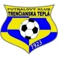
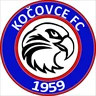

Posledný zápasU19 · V. liga starších dorastencov U19, 13. kolo
 Krajné U19 (domáci)
Krajné U19 (domáci)Výsledok 1:1
 TJ Žihlavník Omšenie (hostia)
TJ Žihlavník Omšenie (hostia)· Športový areál Krajné · remíza
Návrh webu · nie je to oficiálna stránka klubu
V. liga starších dorastencov U19 · 10. miesto zo 14 · tréner Lukáš Kodaj
Posledný zápasU19 · V. liga starších dorastencov U19, 13. kolo
Krajné U19 (domáci)Výsledok 1:1
TJ Žihlavník Omšenie (hostia)· Športový areál Krajné · remíza
3–1–8výhry, remízy, prehry · skóre 17:38
V. liga starších dorastencov U19
| # | Tím | Z | V | R | P | Skóre | B |
|---|---|---|---|---|---|---|---|
| 1 | FK Horná Súča | 12 | 11 | 1 | 0 | 54:12 | 34 |
| 2 | 12 | 8 | 2 | 2 | 53:22 | 26 | |
| 3 | 12 | 7 | 2 | 3 | 27:19 | 23 | |
| 4 |  TJ Lokomotíva Trenčianska Teplá | 12 | 6 | 3 | 3 | 15:14 | 21 |
| 5 |  Kočovce FC 1959 | 12 | 7 | 0 | 5 | 40:26 | 21 |
| 6 | 12 | 6 | 1 | 5 | 32:33 | 19 | |
| 7 | 12 | 5 | 3 | 4 | 31:24 | 18 | |
| 8 | TJ Štart Svinná | 12 | 4 | 2 | 6 | 26:28 | 14 |
| 9 | 12 | 3 | 2 | 7 | 22:38 | 11 | |
| 10 | 12 | 3 | 1 | 8 | 17:38 | 10 | |
| 11 | 12 | 2 | 3 | 7 | 21:44 | 9 | |
| 12 | 12 | 2 | 2 | 8 | 13:34 | 8 | |
| 13 | 12 | 2 | 2 | 8 | 16:35 | 8 | |
| 14 | 0 | 0 | 0 | 0 | 0:0 | 0 |
Hráči, ktorí v roku 2026 nastúpili alebo boli v nominácii (Sportnet). Pri mládeži len mená.